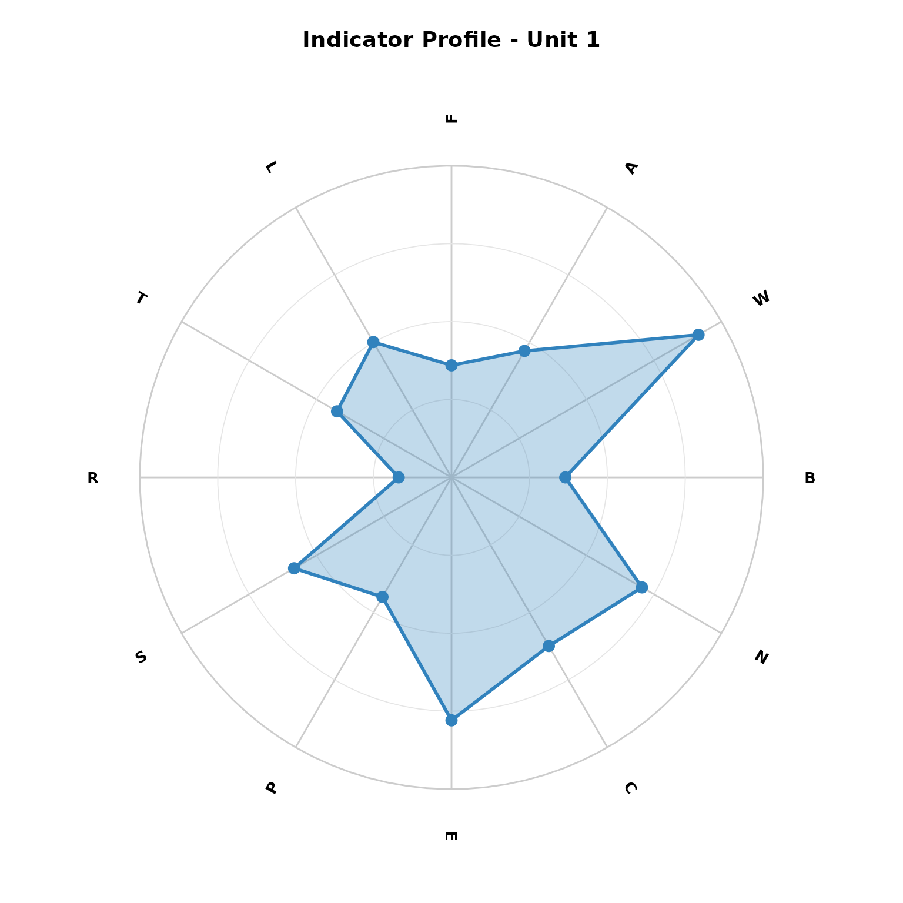
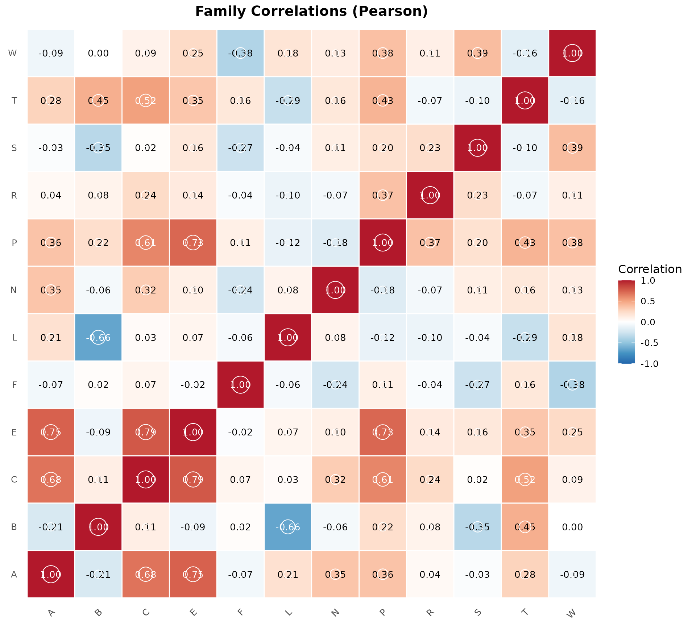
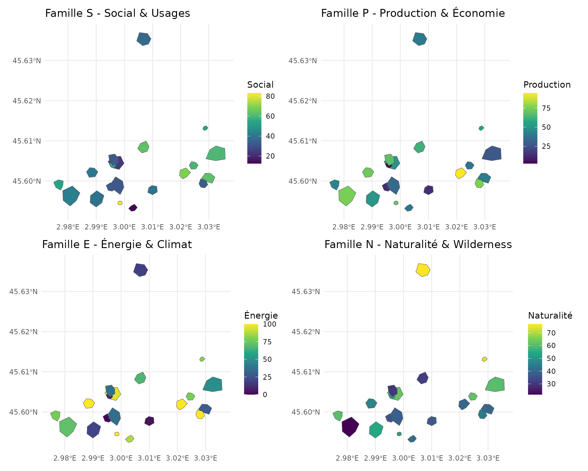
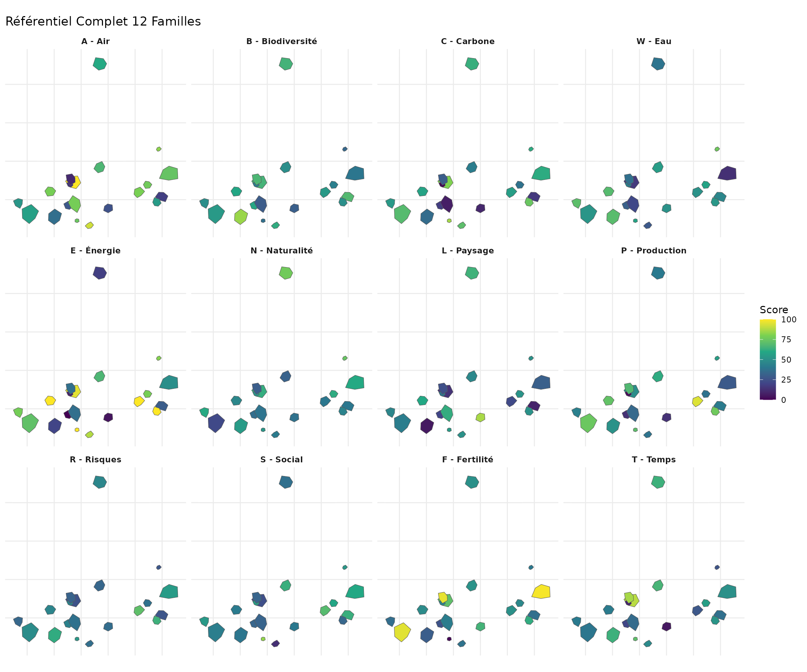
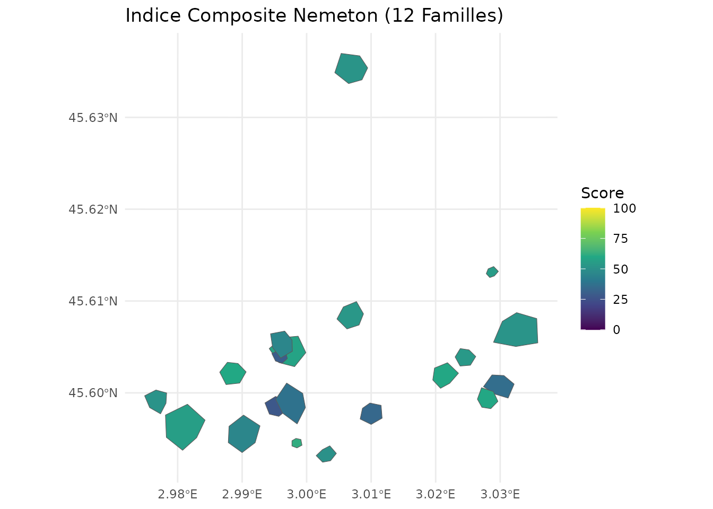
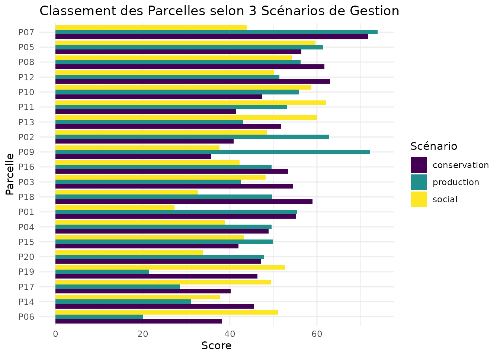

Référentiel Complet 12 Familles
Pascal Obstétar
2026-07-03
Source:vignettes/complete-referential_fr.Rmd
complete-referential_fr.RmdIntroduction
Le package nemeton propose un référentiel complet de
12 familles d’indicateurs pour l’évaluation
multi-critères des services écosystémiques forestiers. Cette vignette
démontre l’utilisation de l’ensemble du référentiel avec le jeu de
données massif_demo_units.
Les 12 Familles
| Code | Famille | Indicateurs | Nb |
|---|---|---|---|
| C | Carbone & Vitalité | C1 (biomasse), C2 (NDVI) | 2 |
| B | Biodiversité | B1 (protection), B2 (structure), B3 (connectivité) | 3 |
| W | Eau | W1 (réseau hydro), W2 (zones humides), W3 (TWI) | 3 |
| A | Air & Microclimat | A1 (couverture), A2 (qualité air) | 2 |
| F | Fertilité des Sols | F1 (fertilité), F2 (érosion) | 2 |
| L | Paysage | L1 (fragmentation), L2 (lisière), L3 (TVB) | 3 |
| T | Temps & Dynamique | T1 (ancienneté), T2 (changements) | 2 |
| R | Risques & Résilience | R1 (incendie), R2 (tempête), R3 (stress), R4 (gibier) | 4 |
| S | Social & Usages | S1 (sentiers), S2 (accessibilité), S3 (proximité) | 3 |
| P | Production & Économie | P1 (volume), P2 (productivité), P3 (qualité) | 3 |
| E | Énergie & Climat | E1 (bois-énergie), E2 (évitement CO2) | 2 |
| N | Naturalité & Wilderness | N1 (distance infra), N2 (continuité), N3 (composite) | 3 |
| Total | 32 |
Chargement des Données
# Le jeu de données de démonstration
data(massif_demo_units)
# Aperçu des données de base
head(massif_demo_units)
#> Simple feature collection with 6 features and 89 fields
#> Geometry type: POLYGON
#> Dimension: XY
#> Bounding box: xmin: 698041.8 ymin: 6499388 xmax: 702507.7 ymax: 6504159
#> Projected CRS: RGF93 v1 / Lambert-93
#> parcel_id forest_type age_class management species age
#> 1 P01 Futaie mixte Mature Mixte 09 68
#> 2 P02 Futaie résineuse Moyen Production 64 33
#> 3 P03 Futaie feuillue Surannée Conservation 03 104
#> 4 P04 Futaie feuillue Surannée Production 03 166
#> 5 P05 Futaie résineuse Moyen Production 61 47
#> 6 P06 Futaie résineuse Mature Production 61 79
#> establishment_year density height dbh volume strata fertility climate
#> 1 1958 266 30.3 45.8 557.7 4 1 continental
#> 2 1993 465 30.4 57.5 1541.7 1 3 atlantique
#> 3 1922 128 31.7 41.7 232.7 2 2 atlantique
#> 4 1860 104 29.9 42.6 186.1 2 1 atlantique
#> 5 1979 324 27.5 51.5 779.5 2 2 atlantique
#> 6 1947 281 38.6 76.1 2072.1 2 1 atlantique
#> surface_ha geometry C1 C2 B1
#> 1 4.989211 POLYGON ((698299.9 6499928,... 271.52938 0.6447576 67.56073
#> 2 5.867935 POLYGON ((701702.2 6500418,... 300.00000 0.6056744 98.28172
#> 3 6.557777 POLYGON ((702240.4 6500270,... 110.16193 0.5285871 75.95443
#> 4 9.989553 POLYGON ((700641.3 6504129,... 93.23794 1.1674470 56.64884
#> 5 5.906395 POLYGON ((699268.2 6500307,... 300.00000 0.6314632 84.96897
#> 6 1.048296 POLYGON ((699943.5 6499421,... 300.00000 0.9846671 18.94739
#> B2 B3 W1 W2 W3 A1 A2 F1
#> 1 48.05999 46.75415 1.1875729 37.39292 11.262508 100.00000 48.38184 1
#> 2 30.72276 50.79763 0.6421157 22.01976 10.763668 100.00000 73.07190 3
#> 3 65.58163 63.01069 3.7125564 24.07065 5.852777 68.22187 48.53609 2
#> 4 71.39962 64.22587 6.2349453 7.87978 5.333345 100.00000 55.56960 1
#> 5 25.31719 73.97430 5.8682237 21.40946 9.680398 100.00000 72.48102 2
#> 6 53.99485 49.62298 6.5378436 7.18223 9.726250 100.00000 69.09907 1
#> F2 L1 L2 T1 T2 R1 R2 R3
#> 1 25.019879 57.94143 49.02609 68 7.745998 35.404437 63.67438 10.97556
#> 2 4.315520 32.99353 46.67417 33 7.087985 56.732381 55.62368 75.73944
#> 3 10.886737 41.24140 23.62314 104 2.554360 5.098883 67.18918 37.15549
#> 4 33.100871 88.95956 39.65036 166 5.036521 73.789178 40.38996 33.31784
#> 5 17.500878 49.69644 72.70574 47 10.166800 57.295560 40.61244 44.91239
#> 6 4.733067 40.25978 75.83629 79 16.832511 36.984480 93.48662 35.74830
#> R4 S1 S2 S3 P1 P2 P3 E1
#> 1 24.564726 0.6142734 80.64513 57354.57 582.4222 4.990758 60.95405 11.132573
#> 2 48.959040 0.7971139 89.99527 76907.49 1000.0000 9.520484 79.39129 15.000000
#> 3 5.968351 2.3380220 82.53975 41461.33 215.6208 6.577982 62.21006 4.219383
#> 4 20.677678 3.6500435 29.52521 13962.24 205.1654 6.470144 62.59759 2.608120
#> 5 24.612972 0.5191291 68.70905 45003.21 780.8117 6.207055 89.59382 15.000000
#> 6 22.180692 4.0203980 71.77637 60740.65 1000.0000 4.884225 87.84672 15.000000
#> E2 N1 N2 N3 C1_norm C2_norm B1_norm
#> 1 24.491660 1961.124 9009.219 70.3324503 89.83192 18.18404 68.69188
#> 2 30.000000 5976.014 5456.947 0.3475665 100.00000 12.06639 100.00000
#> 3 9.282643 1398.919 5089.703 59.2891167 32.20069 0.00000 77.24599
#> 4 5.737864 3606.938 8946.680 100.0000000 26.15641 100.00000 57.57144
#> 5 30.000000 3052.444 8478.450 20.5651477 100.00000 16.10308 86.43282
#> 6 30.000000 7762.738 3903.807 36.2273780 100.00000 71.38969 19.14945
#> B2_norm B3_norm W1_norm W2_norm W3_norm A1_norm A2_norm F1_norm
#> 1 50.33336 28.62731 13.035855 100.000000 100.00000 100.00000 5.025117 0
#> 2 26.95334 34.97861 5.589419 53.053237 93.59175 100.00000 58.750856 100
#> 3 73.96207 54.16226 47.506263 59.316263 30.50498 30.98201 5.360775 50
#> 4 81.80788 56.07101 81.941248 9.872349 23.83220 100.00000 20.665725 0
#> 5 19.66369 71.38334 76.934862 51.189497 79.67574 100.00000 57.465104 50
#> 6 58.33678 33.13352 86.076335 7.742161 80.26477 100.00000 50.105960 0
#> F2_norm L1_norm L2_norm T1_norm T2_norm R1_norm R2_norm
#> 1 71.926722 46.37097 45.50493 35.66879 45.88045 44.11912 55.33710
#> 2 0.000000 3.23710 41.29189 13.37580 41.96130 75.16855 43.27603
#> 3 22.828336 17.49732 0.00000 58.59873 14.95889 0.00000 60.60275
#> 4 100.000000 100.00000 28.70996 98.08917 29.74272 100.00000 20.45379
#> 5 45.805793 32.11573 87.92288 22.29299 60.29882 75.98843 20.78710
#> 6 1.450555 15.80015 93.53071 42.67516 100.00000 46.41936 100.00000
#> R3_norm R4_norm S1_norm S2_norm S3_norm P1_norm P2_norm
#> 1 2.480901 32.323036 2.685042 86.59194 71.857692 58.23268 17.55010
#> 2 100.000000 67.877065 7.844928 100.00000 100.000000 100.00000 100.00000
#> 3 41.901695 5.219342 51.330450 89.30881 48.982723 21.54416 46.44068
#> 4 36.123091 26.657773 88.356628 13.28616 9.403583 20.49838 44.47782
#> 5 53.581750 32.393354 0.000000 69.47563 54.080517 78.07616 39.68908
#> 6 39.782798 28.848373 98.808295 73.87417 76.731251 100.00000 15.61098
#> P3_norm E1_norm E2_norm N1_norm N2_norm N3_norm famille_carbone
#> 1 53.89207 74.21715 81.63887 12.965307 98.39928 70.3324503 54.00798
#> 2 83.57467 100.00000 100.00000 61.069681 57.39465 0.3475665 56.03319
#> 3 55.91417 28.12922 30.94214 6.229248 53.15548 59.2891167 16.10034
#> 4 56.53806 17.38747 19.12621 32.684614 97.67738 100.0000000 63.07820
#> 5 100.00000 100.00000 100.00000 26.040953 92.27251 20.5651477 58.05154
#> 6 97.18730 100.00000 100.00000 82.477298 39.46642 36.2273780 85.69484
#> famille_biodiversite famille_eau famille_air famille_sol famille_paysage
#> 1 49.21751 71.01195 52.51256 35.9633611 45.937952
#> 2 53.97732 50.74480 79.37543 50.0000000 22.264494
#> 3 68.45678 45.77583 18.17139 36.4141678 8.748662
#> 4 65.15011 38.54860 60.33286 50.0000000 64.354982
#> 5 59.15995 69.26670 78.73255 47.9028964 60.019306
#> 6 36.87325 58.02776 75.05298 0.7252773 54.665429
#> famille_temporel famille_risque famille_social famille_production
#> 1 40.77462 33.56504 53.71156 43.22495
#> 2 27.66855 71.58041 69.28164 94.52489
#> 3 36.77881 26.93095 63.20733 41.29967
#> 4 63.91594 45.80866 37.01546 40.50475
#> 5 41.29591 45.68766 41.18538 72.58841
#> 6 71.33758 53.76263 83.13790 70.93276
#> famille_energie famille_naturalite
#> 1 77.92801 60.56568
#> 2 100.00000 39.60397
#> 3 29.53568 39.55795
#> 4 18.25684 76.78733
#> 5 100.00000 46.29287
#> 6 100.00000 52.72370
# Calculer les indicateurs pour la démonstration
# Les indicateurs sont générés de manière synthétique pour les besoins de cette vignette
set.seed(42)
n <- nrow(massif_demo_units)
# Générer des valeurs synthétiques pour tous les indicateurs
massif_demo_units$C1 <- runif(n, 50, 300) # Biomasse t/ha
massif_demo_units$C2 <- runif(n, 0.3, 0.9) # NDVI
massif_demo_units$B1 <- runif(n, 0, 100) # Protection %
massif_demo_units$B2 <- runif(n, 20, 80) # Structure diversity
massif_demo_units$B3 <- runif(n, 100, 3000) # Distance corridor m
massif_demo_units$W1 <- runif(n, 0, 500) # Distance hydro m
massif_demo_units$W2 <- runif(n, 0, 50) # Zones humides %
massif_demo_units$W3 <- runif(n, 2, 15) # TWI
massif_demo_units$A1 <- runif(n, 40, 95) # Couverture %
massif_demo_units$A2 <- runif(n, 1, 5) # Qualité air (ATMO)
massif_demo_units$F1 <- runif(n, 30, 90) # Fertilité
massif_demo_units$F2 <- runif(n, 0, 50) # Érosion
massif_demo_units$L1 <- runif(n, 0.1, 0.9) # Fragmentation
massif_demo_units$L2 <- runif(n, 0, 200) # Lisière m
massif_demo_units$T1 <- runif(n, 20, 150) # Ancienneté ans
massif_demo_units$T2 <- runif(n, -20, 20) # Changement %
massif_demo_units$R1 <- runif(n, 10, 90) # Risque incendie
massif_demo_units$R2 <- runif(n, 10, 80) # Risque tempête
massif_demo_units$R3 <- runif(n, 0, 100) # Stress
massif_demo_units$S1 <- runif(n, 0, 5) # Accessibilité
massif_demo_units$S2 <- runif(n, 0, 100) # Sentiers
massif_demo_units$S3 <- runif(n, 0, 50000) # Proximité m
massif_demo_units$P1 <- runif(n, 50, 500) # Volume m³/ha
massif_demo_units$P2 <- runif(n, 2, 15) # Productivité
massif_demo_units$P3 <- runif(n, 30, 90) # Qualité
massif_demo_units$E1 <- runif(n, 1, 12) # Bois-énergie
massif_demo_units$E2 <- runif(n, 5, 25) # Évitement CO2
massif_demo_units$N1 <- runif(n, 100, 5000) # Distance infra m
massif_demo_units$N2 <- runif(n, 0, 100) # Continuité
massif_demo_units$N3 <- runif(n, 20, 80) # Naturalité compositeCréer les Indices de Famille
Le système de famille permet d’agréger les indicateurs individuels en indices synthétiques par famille :
# Créer tous les indices de famille (12 familles)
# create_family_index() détecte automatiquement toutes les familles par préfixe
result <- create_family_index(massif_demo_units)
# Afficher les indices de famille
result |>
sf::st_drop_geometry() |>
select(parcel_id, starts_with("famille_")) |>
head()
#> parcel_id famille_carbone famille_biodiversite famille_eau famille_air
#> 1 P01 54.00798 49.21751 71.01195 52.51256
#> 2 P02 56.03319 53.97732 50.74480 79.37543
#> 3 P03 16.10034 68.45678 45.77583 18.17139
#> 4 P04 63.07820 65.15011 38.54860 60.33286
#> 5 P05 58.05154 59.15995 69.26670 78.73255
#> 6 P06 85.69484 36.87325 58.02776 75.05298
#> famille_sol famille_paysage famille_temporel famille_risque famille_social
#> 1 35.9633611 45.937952 40.77462 33.56504 53.71156
#> 2 50.0000000 22.264494 27.66855 71.58041 69.28164
#> 3 36.4141678 8.748662 36.77881 26.93095 63.20733
#> 4 50.0000000 64.354982 63.91594 45.80866 37.01546
#> 5 47.9028964 60.019306 41.29591 45.68766 41.18538
#> 6 0.7252773 54.665429 71.33758 53.76263 83.13790
#> famille_production famille_energie famille_naturalite
#> 1 43.22495 77.92801 60.56568
#> 2 94.52489 100.00000 39.60397
#> 3 41.29967 29.53568 39.55795
#> 4 40.50475 18.25684 76.78733
#> 5 72.58841 100.00000 46.29287
#> 6 70.93276 100.00000 52.72370Visualisation Radar 12-Axes
Le radar 12-axes permet de visualiser le profil complet d’une parcelle sur l’ensemble des 12 familles :
# Radar pour la parcelle 1 (toutes les 12 familles)
nemeton_radar(
result,
unit_id = 1,
mode = "family"
)
Analyse Croisée Inter-Familles
Matrice de Corrélation
# Calculer les corrélations entre toutes les familles
families_all <- c(
"famille_carbone", "famille_biodiversite", "famille_eau", "famille_air",
"famille_sol", "famille_paysage", "famille_temporel", "famille_risque",
"famille_social", "famille_production", "famille_energie", "famille_naturalite"
)
correlations <- compute_family_correlations(result, families = families_all)
# Visualiser la matrice de corrélation
plot_correlation_matrix(correlations)
Hotspots Multi-Critères
Identifier les parcelles qui excellent simultanément sur plusieurs familles :
# Hotspots pour conservation (C, B, N)
hotspots_conservation <- identify_hotspots(
result,
families = c("famille_carbone", "famille_biodiversite", "famille_naturalite"),
threshold = 0.7,
min_families = 2
)
# Hotspots pour production durable (P, C, E)
hotspots_production <- identify_hotspots(
result,
families = c("famille_production", "famille_carbone", "famille_energie"),
threshold = 0.7,
min_families = 2
)
# Hotspots pour services sociaux (S, A, L)
hotspots_social <- identify_hotspots(
result,
families = c("famille_social", "famille_air", "famille_paysage"),
threshold = 0.7,
min_families = 2
)
# Afficher les hotspots
table(hotspots_conservation$is_hotspot)
#>
#> TRUE
#> 20
table(hotspots_production$is_hotspot)
#>
#> FALSE TRUE
#> 1 19
table(hotspots_social$is_hotspot)
#>
#> TRUE
#> 20Cartographie Multi-Familles
Familles S, P, E, N
# Visualiser les nouvelles familles S, P, E, N
library(patchwork)
p_social <- ggplot(result) +
geom_sf(aes(fill = famille_social)) +
scale_fill_viridis_c(name = "Social") +
labs(title = "Famille S - Social & Usages") +
theme_minimal()
p_production <- ggplot(result) +
geom_sf(aes(fill = famille_production)) +
scale_fill_viridis_c(name = "Production") +
labs(title = "Famille P - Production & Économie") +
theme_minimal()
p_energy <- ggplot(result) +
geom_sf(aes(fill = famille_energie)) +
scale_fill_viridis_c(name = "Énergie") +
labs(title = "Famille E - Énergie & Climat") +
theme_minimal()
p_naturalness <- ggplot(result) +
geom_sf(aes(fill = famille_naturalite)) +
scale_fill_viridis_c(name = "Naturalité") +
labs(title = "Famille N - Naturalité & Wilderness") +
theme_minimal()
(p_social + p_production) / (p_energy + p_naturalness)
Toutes les Familles
# Créer une facette pour toutes les 12 familles
result_long <- result |>
sf::st_drop_geometry() |>
tidyr::pivot_longer(
cols = starts_with("famille_"),
names_to = "famille",
values_to = "valeur"
) |>
left_join(
result |> select(parcel_id, geometry),
by = "parcel_id"
) |>
sf::st_as_sf()
# Labels des familles pour la facette
family_labels <- c(
famille_carbone = "C - Carbone",
famille_biodiversite = "B - Biodiversité",
famille_eau = "W - Eau",
famille_air = "A - Air",
famille_sol = "F - Fertilité",
famille_paysage = "L - Paysage",
famille_temporel = "T - Temps",
famille_risque = "R - Risques",
famille_social = "S - Social",
famille_production = "P - Production",
famille_energie = "E - Énergie",
famille_naturalite = "N - Naturalité"
)
ggplot(result_long) +
geom_sf(aes(fill = valeur)) +
facet_wrap(~famille, ncol = 4, labeller = labeller(famille = family_labels)) +
scale_fill_viridis_c(name = "Score") +
labs(title = "Référentiel Complet 12 Familles") +
theme_minimal() +
theme(
strip.text = element_text(face = "bold"),
axis.text = element_blank(),
axis.ticks = element_blank()
)
Normalisation et Indice Composite
# Normaliser tous les indicateurs
result_norm <- normalize_indicators(
result,
indicators = c(
paste0("C", 1:2), paste0("B", 1:3), paste0("W", 1:3),
paste0("A", 1:2), paste0("F", 1:2), paste0("L", 1:2),
paste0("T", 1:2), paste0("R", 1:3), paste0("S", 1:3),
paste0("P", 1:3), paste0("E", 1:2), paste0("N", 1:3)
),
method = "minmax"
)
# Créer un indice composite global (toutes familles)
result_composite <- create_composite_index(
result_norm,
indicators = families_all,
weights = rep(1, 12), # Poids égaux pour toutes les familles
name = "nemeton_index_12"
)
# Visualiser l'indice composite
ggplot(result_composite) +
geom_sf(aes(fill = nemeton_index_12)) +
scale_fill_viridis_c(name = "Score", limits = c(0, 100)) +
labs(title = "Indice Composite Nemeton (12 Familles)") +
theme_minimal()
Comparaison de Scénarios
# Créer différents indices pour différents objectifs de gestion
# Scénario 1: Conservation intégrale
composite_conservation <- create_composite_index(
result_norm,
indicators = c("famille_carbone", "famille_biodiversite", "famille_eau", "famille_naturalite"),
weights = c(0.3, 0.4, 0.15, 0.15),
name = "conservation"
)
# Scénario 2: Production durable
composite_production <- create_composite_index(
result_norm,
indicators = c("famille_production", "famille_energie", "famille_sol", "famille_carbone"),
weights = c(0.4, 0.25, 0.2, 0.15),
name = "production"
)
# Scénario 3: Services sociaux
composite_social <- create_composite_index(
result_norm,
indicators = c("famille_social", "famille_air", "famille_paysage", "famille_risque"),
weights = c(0.35, 0.25, 0.2, 0.2),
name = "social"
)
# Comparer les scénarios
comparison <- result |>
mutate(
conservation = composite_conservation$conservation,
production = composite_production$production,
social = composite_social$social
) |>
sf::st_drop_geometry() |>
select(parcel_id, conservation, production, social) |>
tidyr::pivot_longer(cols = -parcel_id, names_to = "scenario", values_to = "score")
# Visualiser le classement des parcelles selon les scénarios
ggplot(comparison, aes(x = reorder(parcel_id, score), y = score, fill = scenario)) +
geom_col(position = "dodge") +
coord_flip() +
scale_fill_viridis_d() +
labs(
title = "Classement des Parcelles selon 3 Scénarios de Gestion",
x = "Parcelle",
y = "Score",
fill = "Scénario"
) +
theme_minimal()
Conclusion
Cette vignette a démontré l’utilisation complète du référentiel 12 familles de nemeton. Le package permet :
- Évaluation holistique : Couvre l’ensemble des dimensions des services écosystémiques (biophysiques, écologiques, sociaux, économiques)
- Flexibilité : Possibilité de créer des indices composites adaptés à différents objectifs de gestion
- Analyse croisée : Identification des synergies et trade-offs entre familles
- Visualisation : Radars 12-axes, cartes multi-familles, matrices de corrélation
Pour aller plus loin, consultez la vignette “Multi-Criteria Optimization” qui présente les outils d’analyse Pareto, de clustering et de trade-off analysis.